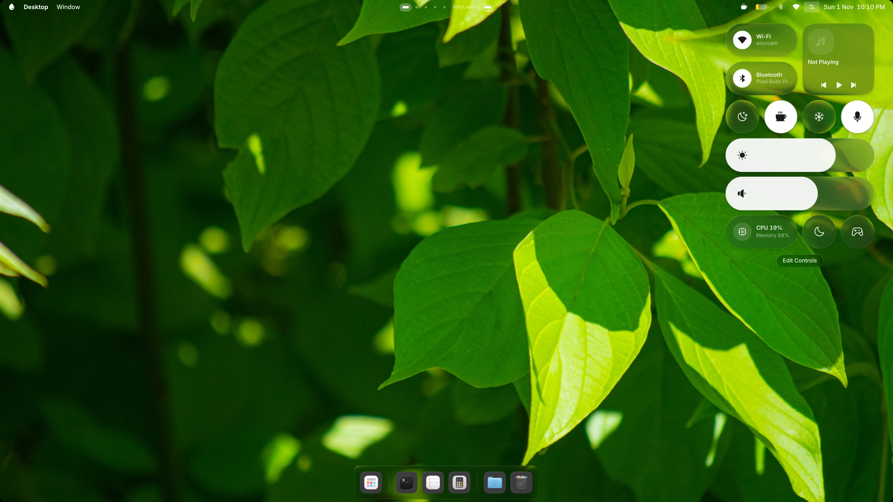
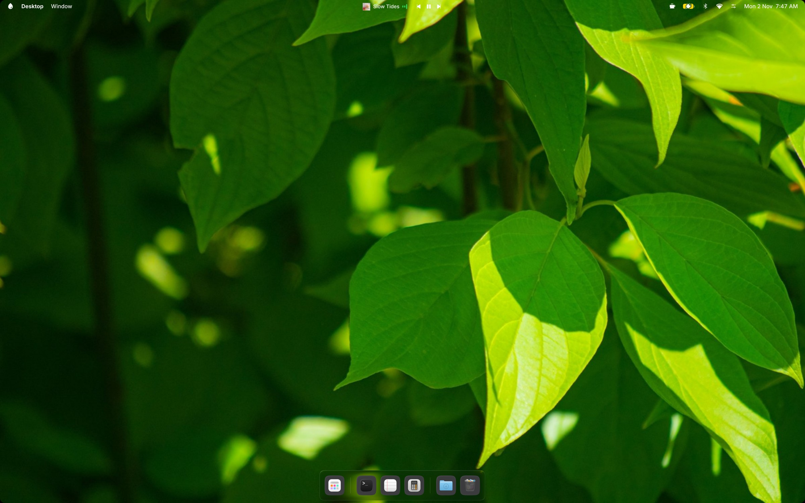

Pairing mode

2 selected
Quick Share
Nearby devices
iRice laptopLaptop
Pixel TabletTablet
Pixel 9Phone
2 photos receivedFrom iRice laptop
Earbuds, found.
Phones and laptops, shared.
0
18% of 2450 · Enter copies it
Live Captions
Listening…
Groceries
10:0190
Sunday, 1 November
NEXT
Design review10:30 – 11:15 · in 20 minWEATHER
24° SunnyHigh 29° · Low 19°Bedside Mode, while it charges.
Everything, at a glance.
Just ask.
Captions, live.
Just say it.
All in glass.
Or Material.
It makes room.
iRice